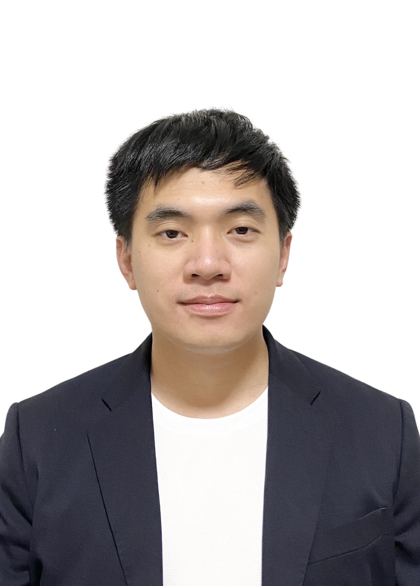

DAO TUNG

Summary
Electrical & Control Engineer with 4+ years of experience designing conveyor systems for power plants at IHI Transport Machinery Co., Ltd.
Skilled in electrical design, sequence control, Python, C, and web development (HTML/CSS/JavaScript).
TOEIC 610.
Passionate about engineering, hands-on problem solving, and continuous learning.
Education
- Bachelor of Engineering, Department of Electrical, Electronics and Information Engineering
Nagaoka University of Technology
- Diploma of Engineering, Department of Electrical and Electronics Engineering
Nagaoka National College of Technology
- Japanese Language Course
Aoyama School
Work experience
Electrical and Control Design Engineer
IHI Transport Machinery Co., Ltd. (April 2020 – Present)
- Engaged in basic and detailed design of electrical and control systems for biomass and coal-fired power plant conveyor facilities.
- Created technical documents such as single-line diagrams, system configuration diagrams, cable selection lists, wiring diagrams, and equipment specifications according to client requirements.
- Managed internal schedules and coordinated with subcontractors to ensure project quality and deadlines.
- Utilized software tools including AutoCAD, Microsoft Office (Word, Excel, PowerPoint), and Adobe Acrobat.
- Gained practical skills in sequence control design, ladder programming, and PLC systems.
- Contributed to technical problem-solving based on on-site construction and equipment specifications.
Skills
- Electrical Design: ⭐⭐⭐⭐⭐
- PLC Programming: ⭐⭐⭐⭐☆
- Python: ⭐⭐⭐⭐☆
- AutoCAD: ⭐⭐⭐⭐☆
- MS Office: ⭐⭐⭐⭐⭐
- Web Programming (HTML/CSS/JS): ⭐⭐⭐⭐☆
Awards and Certifications
- Second Prize, Provincial Mathematics Competition for Excellent Students – Vietnam
- Second-Class Electrical Work Specialist License (March 2021)
- Third-Class Chief Electrical Engineer License (Denkensanshu / 電験三種) – Japan
Other
Contact Me